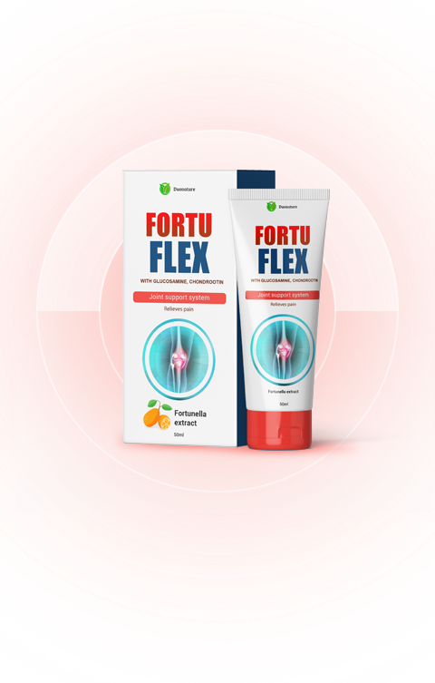

ΑΙΤΙΕΣ ΑΣΘΕΝΕΙΩΝ
ΣΤΙΣ ΑΡΘΡΩΣΕΙΣ
Ηλικιακές αλλαγές, φθορά στους χόνδρους, γενετική προδιαγραφή
Περιττό βάρος, κούραση, τραυματισμός, άγχος
Καθιστικός τρόπος ζωής, ανθυγιεινή διατροφή, κακές συνήθειες, έλλειψη βιταμινών

ΚΥΡΙΑ ΠΛΕΟΝΕΚΤΗΜΑΤΑ ΚΡΕΜΑ FORTUFLEX
Ανακουφίζει γρήγορα τον πόνο το πρήξιμο και τη φλεγμονή.
Αποκαθιστά τις αρθρώσεις.
Διεγείρει τη παραγωγή νέου χόνδρου.
Διεγείρει τον μεταβολισμό των χονδροκυττάρων και τη σύνθεση κολλαγόνου και πρωτεογλυκανών.
Ανακουφίζει τους μυς απο κράμπες.
 ΠΑΡΑΓΓΕΛΙΑ
ΠΑΡΑΓΓΕΛΙΑ
ΕΠΙΣΤΗΜΟΝΙΚΗ ΕΡΕΥΝΑ ΚΡΕΜΑ FORTUFLEX
Παγκόσμιος οργανισμός κατά των ασθενειών στις αρθρώσεις το 2019, η κρέμα Fortuflex πραγματοποίησε μια σειρά κλινικών δοκιμών. Στη έρευνα συμμετείχαν 3500 με προβλήματα στις αρθρώσεις με διαφορετικούς βαθμούς σοβαρότητας. Σύμφωνα με την έρευνα, όλα τα άτομα υποβλήθηκαν σε θεραπεία με τη κρέμα Fortuflex.
Στο τέλος της μελέτης, ελήφθησαν τα ακόλουθα στατιστικά στοιχεία:

Νιώσαμε το αποτέλεσμα μετά την πρώτη εφαρμογή
Αισθανθήκαμε άμεση ανακούφιση από τον πόνο

Νικήσαμε την ασθένεια με μία μόνο θεραπεία

Ενισχύσαμε τη γενική κατάσταση των αρθρώσεων

Απαλλαχθήκαμε από την αρθρίτιδα
ΤΙ ΑΚΡΙΒΩΣ ΚΑΝΕΙ Η ΚΡΕΜΑ
FORTUFLEX ΚΑΙ ΕΙΝΑΙ ΤΟΣΟ ΑΠΟΤΕΛΕΣΜΑΤΙΚΗ?

Χάρη στη μοναδική της φόρμουλα και την παρουσία εξαιρετικών φυσικών συστατικών, η κρέμα ενεργεί στο επίκεντρο της φλεγμονής, αφαιρώντας την. Η χονδροϊτίνη και η γλυκοζαμίνη, που αποτελούν μέρος της Fortuflex, έχουν τη μέγιστη δραστικότητα και έχουν άμεση επίδραση στους εσωτερικούς ιστούς των αρθρώσεων, αποτρέπουν τις καταστροφικές διεργασίες στον χόνδρο του ιστού και των οστών.

ΧΟΝΔΡΟΪΤΙΝΗ
- Διεγείρει τη σύνθεση του υαλουρονικού οξέος, το οποίο ενισχύει όχι μόνο τον χόνδρο, αλλά και τους συνδέσμους και τους τένοντες.
- Διεγείρει το σχηματισμό άλλων ουσιών από τις οποίες χτίζεται ο χόνδρος.
- Διατηρεί το νερό στον χόνδρο, βελτιώνοντας την απορρόφηση των κραδασμών.
- Αποκλείει τα ένζυμα που καταστρέφουν τον συνδετικό ιστό.
- Έχει αντιφλεγμονώδη δράση.
ΓΛΥΚΟΖΑΜΙΝΗ
- Διεγείρει το σχηματισμό του υαλουρονικού οξέος, το οποίο συγκρατεί το νερό στον συνδετικό ιστό, παρέχοντας ελαστικότητα.
- Διεγείρει τη σύνθεση του κολλαγόνου - ένα σημαντικό συστατικό του χόνδρου, το οποίο εξασφαλίζει ανθεκτικότητα.
- Ρυθμίζει την ποσότητα και τη σύνθεση του ενδοαρθρικού υγρού.
- Αναστέλλει τη φλεγμονή στους ιστούς των αρθρώσεων.
- Καταστολή του σχηματισμού των ελεύθερων ριζών, επιβραδύνοντας τη γήρανση στις αρθρώσεις.

ΕΚΧΥΛΙΣΜΑ ΚΟΥΜΚΟΥΑΤ
- Διεγείρει το ανοσοποιητικό σύστημα.
- Αναπληρώνει την ανεπάρκεια βιταμινών και μετάλλων.
- Αφαιρεί τις τοξίνες από το σώμα.
- Επιταχύνει την επούλωση τεντώνοντας τους συνδέσμους, τους τένοντες και τους μύες.
- Αυξάνει την αντοχή σε ιούς και λοιμώξεις.

ΓΝΩΜΗ ΕΙΔΙΚΟΥ
Ιωάννης Παλαιολόγου Τραυματολόγος, χειρουργός του Τμήματος Αρθροσκόπησης και Χειρουργικής
Η συντριπτική πλειονότητα των σύγχρονων φαρμάκων για τις αρθρώσεις κάνουν απλώς τοπική αναισθησία και δεν δρουν αποτελεσματικά στη δομή του ιστού στους χόνδρους, και επομένως δεν θεραπεύουν τις αρθρώσεις. Δηλαδή, κρύβουν το πρόβλημα της ασθένειας καθώς αυτή συνεχίζει να εξελίσσεται, η οποία οδηγεί σε ακόμη μεγαλύτερα προβλήματα.
Η κρέμα δρα τοπικά, διεισδύει απευθείας στην κοιλότητα του αρθρικού σάκου και δρα άμεσα για την εξάλειψη της νόσους. Εξαιρετικό για τη θεραπεία της οστεοχόνδρωσης, της αρθρίτιδας, των αρθρώσεων και των διαταραχών του μυοσκελετικού συστήματος.
 ΠΑΡΑΓΓΕΛΙΑ
ΠΩΣ ΝΑ ΧΡΗΣΙΜΟΠΟΙΕΙΣΕΤΕ ΤΗΝ ΚΡΕΜΑ FORTUFLEX?
Απλώστε την κρέμα στις προβληματικές περιοχές γύρω από τις αρθρώσεις.
Κάντε μασάζ στο δέρμα
ΚΡΙΤΙΚΕΣ ΠΕΛΑΤΕΣ

Είχα μεγάλο πρόβλημα στη πλάτη, η φίλη μου, μου πρότεινε αυτήν την αλοιφή και την παρήγγειλα. Αφού άλειψα την πλάτη μου πλέον δεν με πονούσε τόσο πολύ, μέρα με την μέρα ο πόνος λιγόστευε. Μετά από δύο εβδομάδες πήγα να δω τον γιατρό και με εξέπληξε που μου είπε ότι ήμουν απόλυτα υγιής, η πλάτη μου ήταν σε καλή φυσική κατάσταση! Τώρα έχω πάντα αυτήν την κρέμα στο σπίτι μου.

14 χρόνια έκανα king boxing αργότερα άρχισαν σοβαρά προβλήματα στις αρθρώσεις και έπρεπε να εγκαταλείψω το ring. Τα παλιά τραύματα μου έγιναν αισθητά στην ηλικία των 31 ετών, δεν μπορούσα να σηκωθώ από το κρεβάτι το πρωί χωρίς να κάνω κάποιες ασκήσεις. Υπέφερα για μεγάλο χρονικό διάστημα μέχρι που έμαθα για το Fortuflex. Ο πόνος πέρασε πολύ γρήγορα, τώρα αισθάνομαι απολύτως υγιείς.

Я всю жизнь проработала няней, помогала чужим людям, а когда появились свои внуки – я стала бесполезной бабушкой, которая с трудом передвигается от спальни в кухню. Несколько лет я так мучилась, пока сын не заказал Fortuflex и не принесла мне упаковку. Сейчас я полностью восстановила свое здоровье, я сама выхожу из дома, гуляю с внуками в парке, хожу по магазинам.

ΠΩΣ ΝΑ ΠΑΡΑΓΓΕΙΛΕΤΕ?

Βήμα 1 Αφήστε ένα αίτημα σε αυτήν την ιστοσελίδα
Βήμα 2 Περιμένετε τη κλήση από τον εκπρόσωπος μας

Βήμα 3 Παραλαμβάνετε τα προϊόντα εντός 3 εργάσιμων ημερών
Βήμα 4 Πληρώστε την παραγγελία κατά την παραλαβή